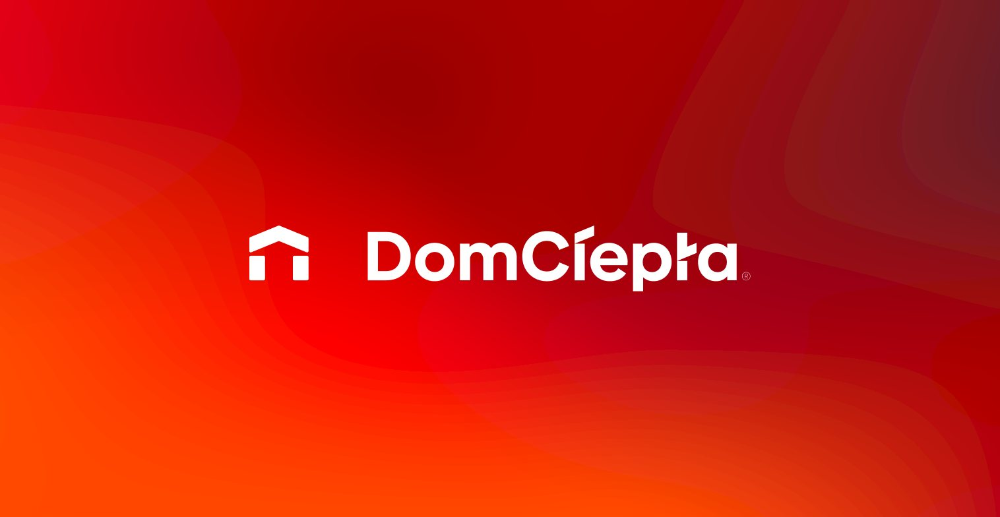

Podejmuję decyzje, które kształtują rozwój produktów cyfrowych i doświadczenie użytkowników
Wybrane projekty
Projekty, w których odpowiadałam za proces projektowy, decyzje lub doświadczenie użytkownika

Aplikacja mobilna 4F. Ewolucja z kanału sprzedaży w ekosystem lojalnościowy
Aplikacja mobilna generowała sprzedaż, ale nie budowała długofalowej relacji z klientem

Od pomysłu do...rezygnacji, jak podjąć trudną decyzję na podstawie danych

Nagroda Mobile Trends Awards 2025 za strategiczne wykorzystanie grywalizacji w budowaniu zaangażowania użytkowników

Pięć godzin, które zmieniły wizję w zakres MVP
Klient miał fundamenty strategiczne – badania, brand i wizję produktu, ale brakowało planu, zakresu funkcjonalnego i uporządkowanego backlogu, który pozwoliłby przejść do realizacji.
Środowisko pracy
- Miro
- Claude
- Slack
- Jira
- Figma
- Azure DevOps
- Adobe Creative Cloud
Aplikacja mobilna 4F | Od sprzedaży do ekosystemu lojalnościowego
Wyzwanie biznesowe
Aplikacja sprzedawała, ale nie budowała długofalowej relacji z klientami. 87% porzuceń koszyka i niewykorzystany potencjał lojalności w salonach
3 kluczowe decyzje
4F TEAM
Program lojalnościowy oparty na punktach i benefitach
Skrócenie checkoutu z 4 do 2 kroków
Mniej kroków, BLIK na pierwszym planie wraz z portfelami cyfrowymi
Konto jako centrum relacji
Personalizacja, grywalizacja i omnichannel
Efekty biznesowe
- +50%Przychodów ze sprzedaży w aplikacji r/r
- 1,05MNowych członków programu 4F TEAM
- 9,37/10Na podstawie 32 tys. odpowiedzi
CTRL+ | Product Discovery dla nowego produktu
Wyzwanie biznesowe
Marka spożywcza planowała wejście na rynek spersonalizowanej suplementacji. Discovery miało zweryfikować potencjał biznesowy i zasadność inwestycji.
3 kluczowe odkrycia
Potrzeba ≠ gotowość do zakupu
15 z 18 badanych dostrzegało wartość personalizacji, ale barierą było zaufanie do marki i wiarygodności medycznej.
Brak realnej przewagi
Planowane funkcjonalności były już standardem u konkurencji.
Nieopłacalny model wejścia
Projekt wymagał kosztownej budowy całego ekosystemu: technologii, ekspertyzy medycznej i marketingu.
Decyzja biznesowa
Zatrzymanie projektu przed fazą UI/DEV
Zamiast inwestować w produkt o niepotwierdzonym potencjale, firma uniknęła kosztownego wdrożenia i mogła przekierować budżet na inne inicjatywy.
Healthy Cities | [Tytuł case study]
Wyzwanie biznesowe
[Placeholder] Opis wyzwania biznesowego – treść w przygotowaniu.
3 kluczowe [odkrycia / decyzje]
[Punkt 1]
[Placeholder] Krótki opis – treść w przygotowaniu.
[Punkt 2]
[Placeholder] Krótki opis – treść w przygotowaniu.
[Punkt 3]
[Placeholder] Krótki opis – treść w przygotowaniu.
[Efekt / decyzja]
[Placeholder] Najważniejszy wynik
Treść w przygotowaniu.
Warsztat strategiczny | Od wizji do zakresu MVP
Problem
Klient miał badania, brand i wizję, ale nie miał zakresu. Bez niego nie było wyceny ani startu prac.
Co zrobiłam
Benchmarki przypięte do lęków
Przykłady z rynku pokazywane przez insighty z badań, a nie przez estetykę.
Service Blueprint zamiast listy funkcji
Pytanie „kto to obsłuży?” oddzielało MVP od życzeń.
Wykonawcy przy stole
Backend, frontend i QA sprawdzali wykonalność w trakcie decyzji.
Wynik
- 135Wymagań w specyfikacji z ustaleń warsztatu
- 7 fazService Blueprintu i 7 filarów portalu
- < 11 tyg.Do pierwszej działającej wersji